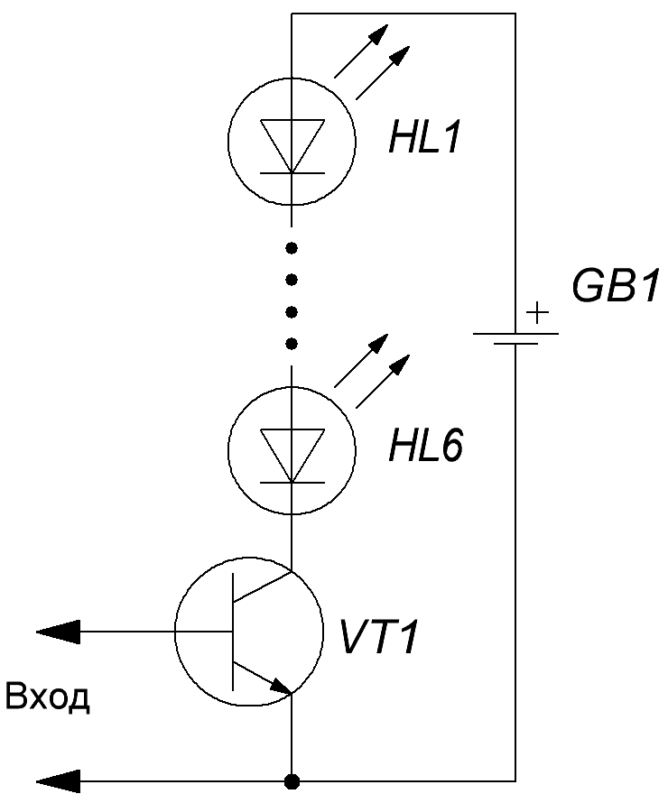
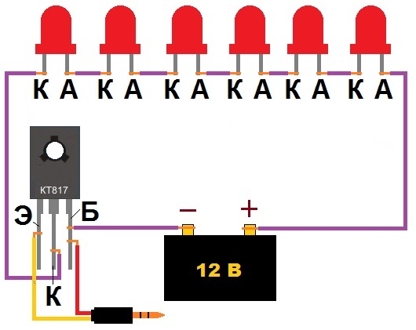

Простая цветомузыка
Для сборки простой цветомузыки на светодиодах (рис. 1 ) потребуются следующие элементы и материалы:
- светодиоды размером 5 мм;
- провод от старых наушников;
- транзистор КТ817 (или его аналог) ;
- блок питания на 12 В;
- провода;
- оргстекло.
Для расчёта количества светодиодов напряжение источника (12 В) делим на рабочее напряжение светодиодов (2 В):
12:2=6
Следовательно нам потребуются 6 светодиодов.


При подключении необходимо учитывать полярность светодиодов и назначение выводов транзистора.
В процессе монтажа, необходимо не нагревать транзистор, т. к. это может привести к его выходу из строя.